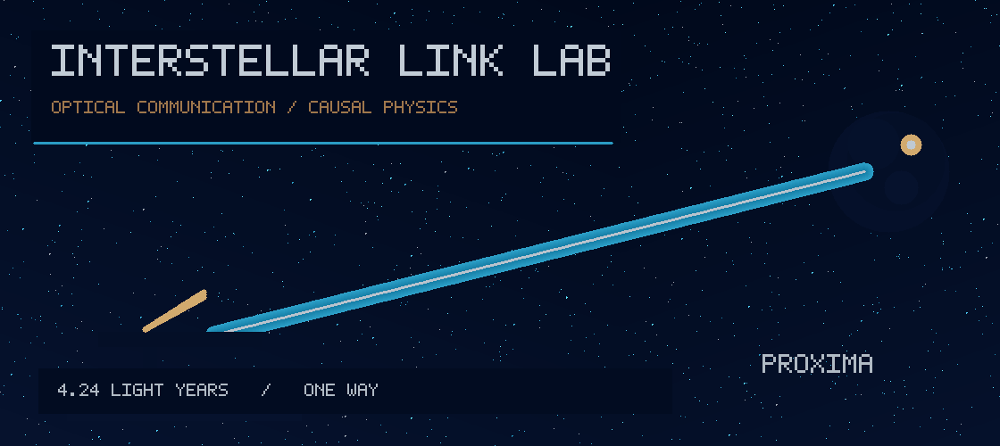

Research notebook / 26 October 2026 / Biswajit Jana
The receiver must stay locked long enough to read the message
The laser is only one part of a deep-space link. We test how angular drift, acquisition pauses, stellar continuum noise, detector dead time and soft decoding combine to determine whether a fresh frame passes its CRC.

What the simulated optical terminal does
Transmit
CRC packet → educational (7,5) convolutional encoder → 8-PPM mapper → Gaussian pointing-fade proxy → synthetic photon arrivals.
Receive
Pilot lock controller → non-paralyzable photon counter → timestamp jitter → soft Poisson demapper → Viterbi decoder → CRC-valid packet.
Four controlled scenarios
Choose a fixed, replicated output. These controls inspect modelled results, not live detector readings.
What the next test must answer
Can a receiver that explicitly tracks the detector's recovery state and a measured pointing estimate recover more CRC-valid information than the deliberately mismatched Poisson receiver? The required comparison needs real detector dead-time distributions, afterpulsing, actual star spectra, link acquisition transients and calibration of the optical pointing PSD.
Full equations, numerical assumptions, independent-seed results and literature: Read the research note. The complete source-code release and PNG figures are distributed separately while their GitHub import is pending.